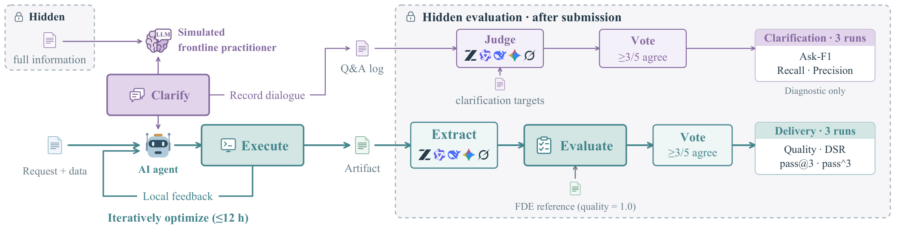

Grounded in real work
49 customer projects, each involving more than one month of FDE work before customer acceptance.
FM Agent Team · Baidu AI Cloud
Real work starts with an incomplete brief. FDE-Bench tests whether AI agents can uncover what customers need—and deliver a solution that meets their standard.
Real customer projects. Customer-accepted references.
Highest mean agent delivery quality
Measured against a real delivery standard
Even the strongest systems fall short of customer-accepted solutions. Explore delivery quality and clarification performance across all 18 configurations.
Swipe to compare all metrics
| Rank | Agent / model | Quality | DSR | pass@3 | pass^3 |
|---|
Quality is averaged within each case, then across all 49 cases. The FDE reference is 1.0.
DSR measures runs reaching that reference. pass@3 / pass^3 measure cases with at least one / all three valid runs—not reference-level delivery.
Main evaluation · Interact-Req · 147 planned runs per configuration · Paper, Table 1 ↗
The highest Quality and highest DSR belong to different configurations. Rankings show reported point estimates.
Beyond a fully specified prompt
Frontline practitioners know their business. They do not always write down every rule. A forward-deployed engineer (FDE) must uncover those rules, then make a solution work.
Inside a warehouse project
Keep each stack to one product type where possible, while avoiding unnecessary stock moves. But what exactly counts as a mixed stack?
The initial request leaves a business rule unstated.
Illustrative example adapted from Figure 1—not a recorded agent run.
49 customer projects, each involving more than one month of FDE work before customer acceptance.
266 clarification targets distilled from actual customer–engineer discussions, hidden from evaluated agents.
Case-specific evaluators check hard constraints and compare artifacts with customer-accepted FDE solutions.
Real projects, different kinds of difficulty
From factory schedules and fleet routes to energy forecasts and material properties. Explore the objectives and acceptance checks described in the paper.
From an incomplete brief to a scored artifact
A shared evaluation protocol separates requirement acquisition from delivery quality. Agents receive no hidden-evaluator feedback while solving.
An underspecified customer brief and business data. Complete requirements and reference solutions remain hidden.
Request + business dataAsk a simulated customer, implement a solution, inspect local outputs, and improve it within the execution budget.
12 hours · Up to 30 roundsHidden evaluation scores the final artifact. A separate panel assesses how well the questions covered requirements.
Delivery + clarification scores
Under the full-information condition, mean Quality across the eight compared systems ranges from 0.449 to 0.795. Every system remains below the FDE reference of 1.0 on average.
Explore the information ablationsFDE-Bench · 2026
@misc{li2026fdebench,
title = {FDE-Bench: Evaluating End-to-End Delivery from
Underspecified Real-World Business Requests},
author = {Li, Huaiming and Huang, Can and others},
year = {2026}
}